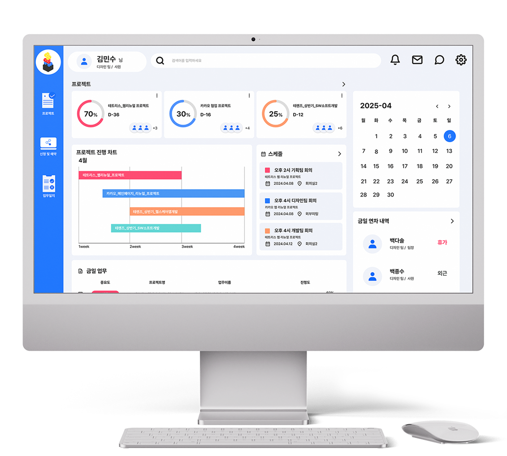
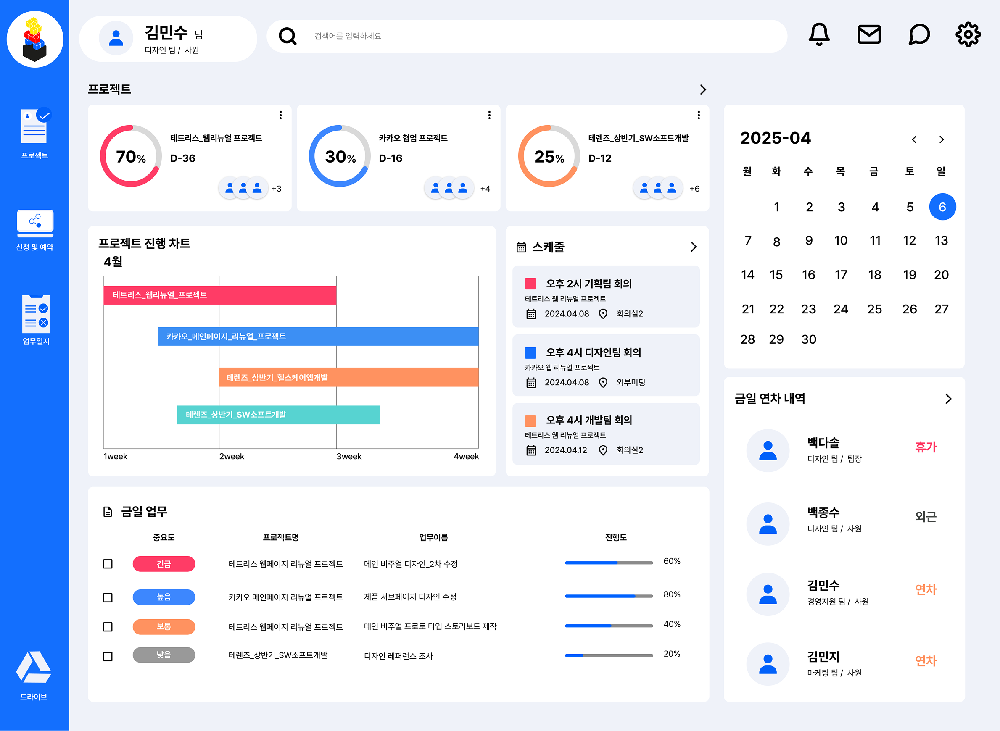
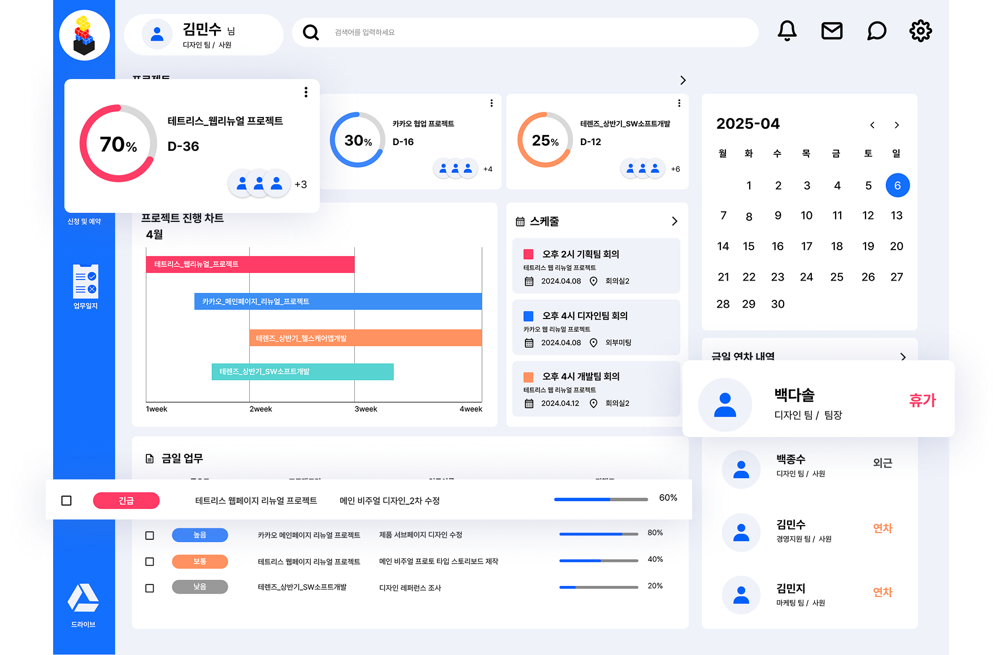
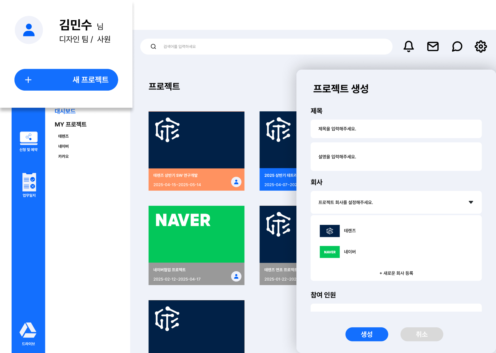
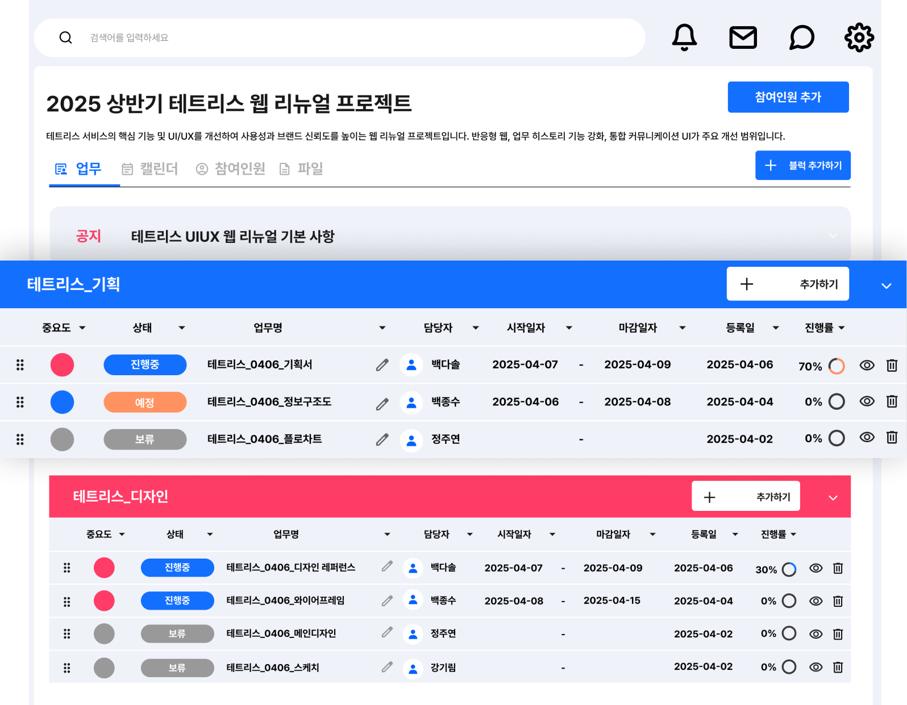
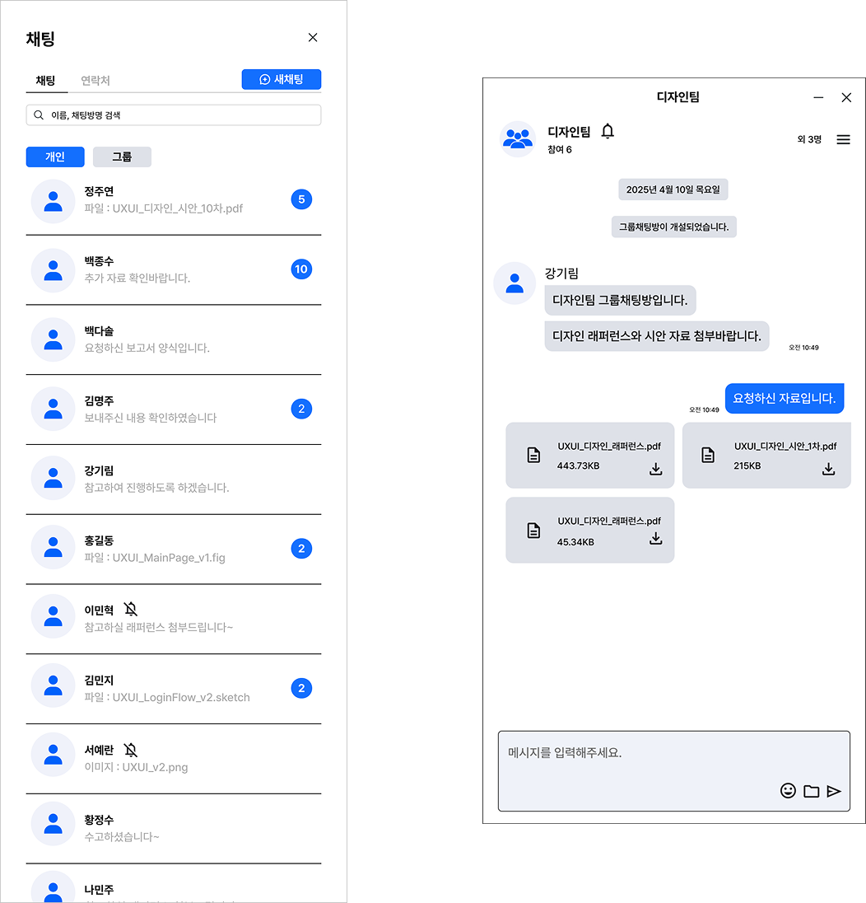
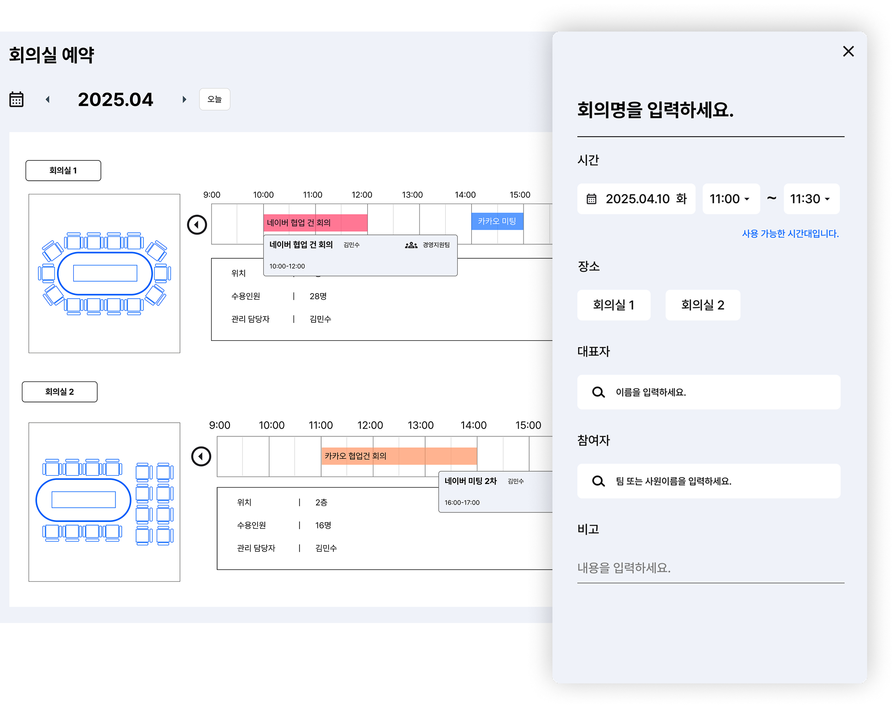
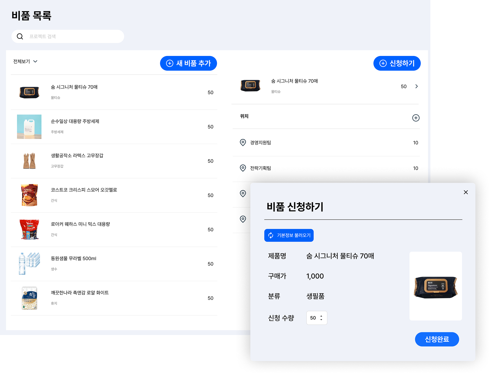
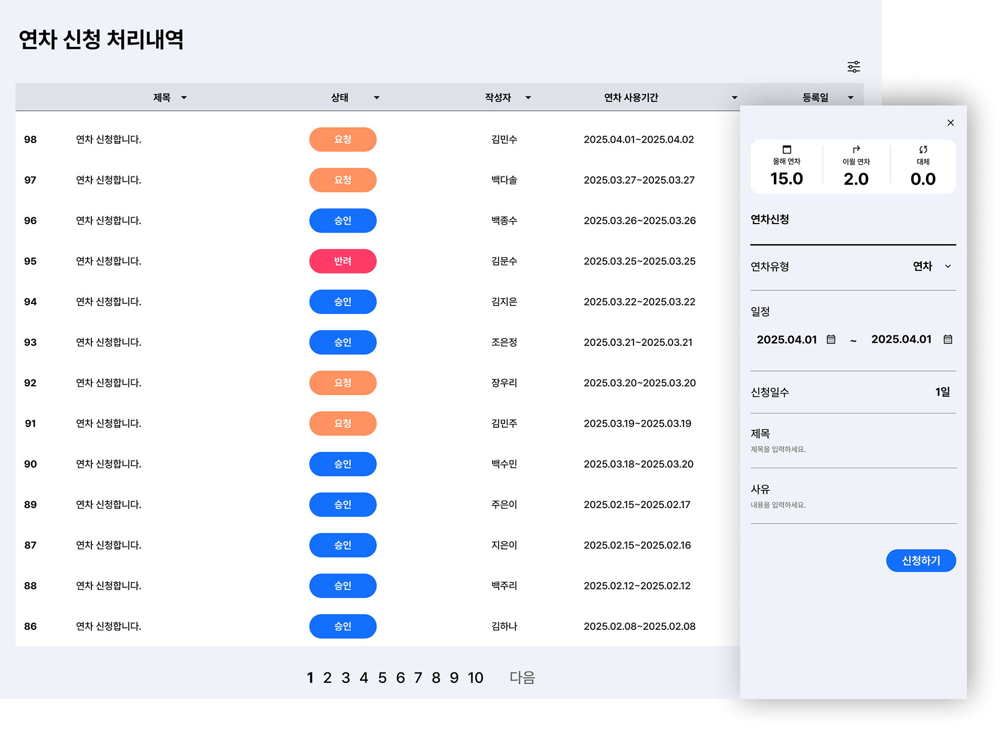
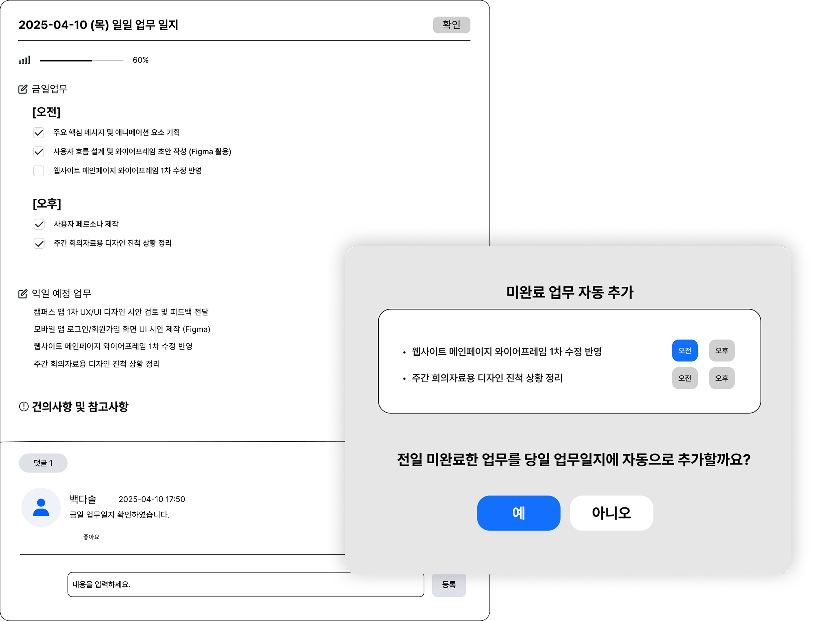

일이 착착, 협업이 척척
— 업무가 맞물리는 테트리스
칸칸이 쌓아가는 프로젝트, 흐트러짐 없는 팀워크.
당신의 일상이 테트리스처럼 정돈됩니다.
당신의 일상이 테트리스처럼 정돈됩니다.
흩어진 아이디어와 쌓여가는 업무를 효율적으로 정리하고 싶으신가요?
테트리스 협업툴은 변화 많은 프로젝트 환경에서도 빈틈없는 업무 관리를 도와줍니다.
직관적인 UI와 테트리스의 구조적 요소를 반영해 시각적으로 프로젝트를 구성할 수 있고,
드래그 앤 드롭 방식으로 누구나 쉽게 업무를 정리하고 협업할 수 있도록 설계되었습니다.
흩어진 아이디어와 쌓여가는 업무를 효율적으로 정리하고 싶으신가요?
테트리스 협업툴은 변화 많은 프로젝트 환경에서도
빈틈없는 업무 관리를 도와줍니다.
직관적인 UI와 테트리스의 구조적 요소를 반영해
시각적으로
프로젝트를
구성할 수 있고, 드래그 앤 드롭 방식으로 누구나
쉽게 업무를 정리하고
협업할 수 있도록 설계되었습니다.

자사 맞춤형 협업툴
조직에 딱 맞춘 기능만 골라 사용하는
자사 전용 업무 환경
회사별로
프로젝트 관리 기능
팀·회사 단위로 칸칸이 분류된 업무 히스토리,
흐름이 한눈에
암호화 설정으로
보완성 향상
민감한 데이터도 안심하고
기록하는 철저한 보안 설계








